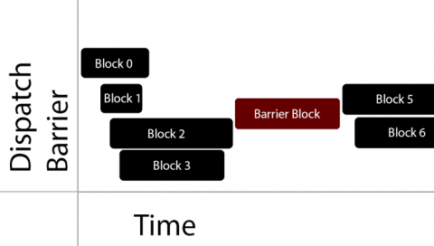

在多线程编程中，最常见的场景是如何保证线程安全，比如你可能经常遇到多线程访问某个dic（又或者是array或其他）造成的crash。
这篇文章里，我们讨论下如何使用GCD实现多线程读者与写者问题，也即单一资源的线程安全问题。
首先，还是先将示例代码放出来好了，后面会有一些我遇到过的问题及改进介绍。如果你只想得到一个解决方案，只需要看第一节就OK，当然，也许你也有兴趣看看后面的部分。
解决方案与原理
ARC版本
1 | _ioQueue = dispatch_queue_create("ioQueue", DISPATCH_QUEUE_CONCURRENT); |
首先，我们需要创建一个私有的队列来处理读写操作。在这里不推荐使用globe_queue, 因为我们通过dispatch_barrier_async来保证写操作的互斥，我们当然不希望写操作阻塞住globe_queue中的其他不相关任务，我们只希望在写的同时，不会有其他的写操作或者读操作。
同时，也不推荐给队列设置优先级，多数情况下使用default就可以了。而改变优先级往往会造成一些无法预料的问题，比如优先级反转(具体的可以参看参考文献)。

图片来自参考文献dispatch_barrier_async的block运行时机是，在它之前所有的任务执行完毕，并且在它后面的任务开始之前，期间不会有其他的任务执行。注意在barrier执行的时候，队列本质上如同一个串行队列，其执行完以后才会恢复到并行队列。
另外一个值得注意的问题是，在写操作的时候，我们使用dispatch_async，而在读操作的时候我们使用dispatch_sync。很明显，这2个操作一个是异步的，一个是同步的。我们不需要使每次程序执行的时候都等待写操作完成，所以写操作异步执行，但是我们需要同步的执行读操作来保证程序能够立刻得到它想要的值。
使用sync的时候需要极其的小心，因为稍不注意，就有可能产生死锁，这可能造成灾难性的后果。你肯定也注意到了在写操作的时候对key进行了copy, 关于此处的解释，插入一段来自参考文献的引用:
函数调用者可以自由传递一个NSMutableString的key，并且能够在函数返回后修改它。因此我们必须对传入的字符串使用copy操作以确保函数能够正确地工作。如果传入的字符串不是可变的（也就是正常的NSString类型），调用copy基本上是个空操作。
到这里整个基本示例代码已经完成，一般情况下能够满足我们的需要。下面来看看在MRC过程中我遇到的一些问题。
关于死锁
1 | dispatch_queue_t queueA; // 串行队列 |
造成死锁比较常见的情况可以简化成上面这段代码。dispatch_sync会同步的提交工作并在返回前等待其完成。第一个dispatch_sync正在运行并等待它的block完成，但是block不能够完成，它调用了第二个dispatch_sync，而第二个dispatch_sync会等待串行队列中已经存在的第一个任务完成，很明显这个任务无法完成，造成死锁。
值得注意的是main_queue就是一个串行队列。
MRC下容易遇到的问题与解决方案
1 | - (void)setSafeObject:(id)object forKey:(NSString *)key |
首先我们看看上面这段代码，基本就是ARC版本转换过来的，看起来没问题。那么究竟是不是真的没问题，我们跑段代码试试看：1
2
3
4
5
6
7
8
9
10
11//版本一
- (void)test
{
for (int i = 0; i < 1000000; i++) {
dispatch_async(dispatch_get_global_queue(DISPATCH_QUEUE_PRIORITY_DEFAULT, 0), ^{
[self setSafeObject:[NSString stringWithFormat:@"86+131633829%i", i] forKey:KEY];
});
NSString *result = [self getSafeObjectForKey:KEY];
NSLog(@"get string: %@, length : %lu", result, result.length);
}
}
test执行后，很快就会发生crash，读操作的result会发生野指针。
如果你有经验的话，可能会发现问题:
如果某个线程a刚取出了result值，这次线程b开始执行写操作，造成线程a中的result值成为了一份过期的数据，如果正好线程b的runloop结束，很有可能旧的result内存地址被释放掉,这时线程a中的result就会发生野指针crash。
这时候，你可能会采取这样子的修改，代码如下:
1 | //版本二 |
运行之后会发现，仍然会crash，其实问题和上面一样，我们的改动没有真正的解决问题。最好的解决方案是在读操作之前就已经retain住了，看看最终版的代码吧:1
2
3
4
5
6
7
8
9//最终版
- (id)getSafeObjectForKey:(NSString *)key
{
__block id result = nil;
dispatch_sync(self.ioQueue, ^{
result = [[_dic objectForKey:key] retain];
});
return [result autorelease];
}
注意retain过一定要释放掉，不然或造成内存泄露。
再次验证后发现，程序不会crash了，恭喜。